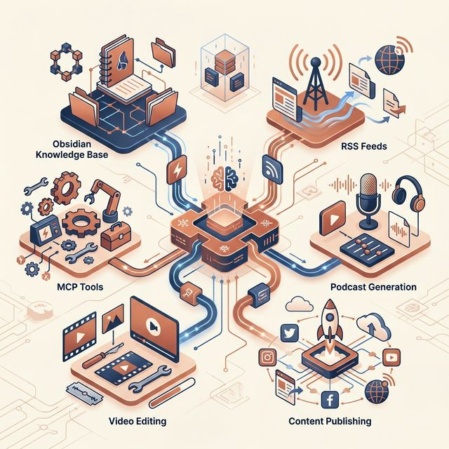
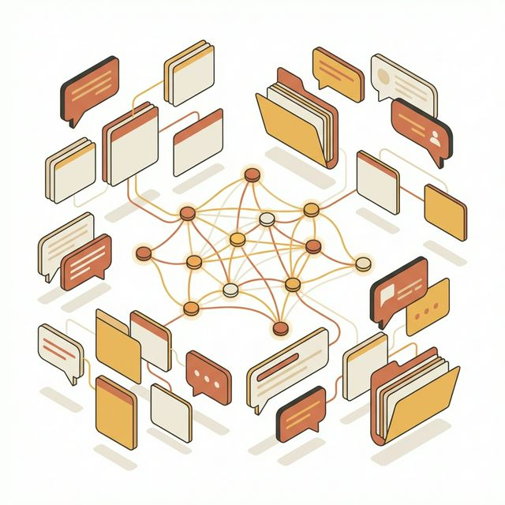
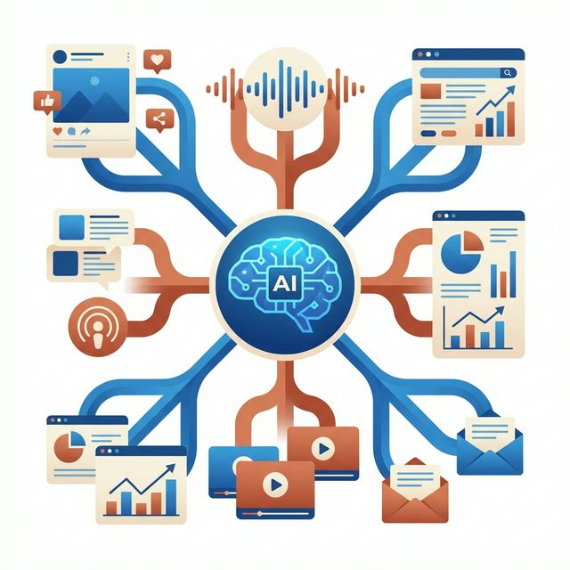

从 Obsidian 数据库到自媒体 IP 打造，
用 MCP、Skills、Workflow 构建你的个人信息操作系统。
资产沉淀最大化，业务复利持续化，让 AI 无处不在 —— Always AI Native。

构建完整的个人 AI 工作流生态

包括微信聊天记录、个人上下文、各种会议、项目
每天的聊天记录和 RSS 和各种信息源，每天自动抓取输出为：Canvas（Obsidian 的 skills）、播客、网页、信息图、PPT、思维导图、视频概览（今天的各种剪辑 skills 和 Remotion 的 skills）
学会更多的 MCP，然后沉淀为 Workflow 和 Skills
学会 Raycast 和 Whisper Flow，提升日常操作效率

用到 Antigravity 和 ChatPRD 的 MCP、Granola 的 MCP、v0 的 MCP、CF 的 CLI（或者 Railway 的 CLI），甚至需要 Qwen TTS 或者配图 API，再结合 UI/UX Pro Max 这个 Skills，最终沉淀为 Skills
标题文案 Skills（参照文案）。善用 AI Toolkit Collection 里面大量很好的 YouTube 和剪辑 Skills，去给自己的视频添加背书和活力和 YouTube 元素。
点击日期查看 · 点击内容即可在线编辑